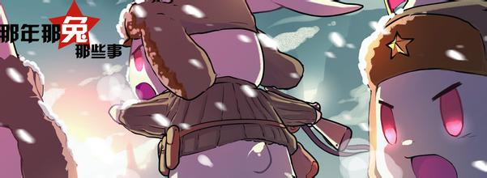
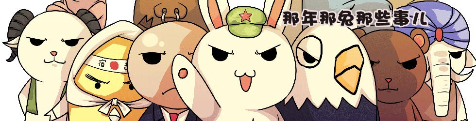

|
2016年11月18日00:32:46 | |
 |
999999999999+ |
还记得国产动画《那年那兔那些事儿》中的那只萌兔吗？这只诙谐逗趣的兔子可是为我们带来了无限欢乐。而在今（26）日，《那年那兔那些事儿》创始人麻蛇爆料：翼下之风动漫科技有限公司获得哔哩哔哩（B站）2000万人民币的A轮融资，并将拍摄动画大电影。

获得B站投资后，翼下之风将在内容方面与B站展开更加深度的合作，同时麻蛇也表示虽然拿了B站的投资，但是仍会跟A站等其他二次元渠道保持良好的合作关系。 本轮融资主要有三个用途，首先是那兔IP的营销上会投入更多的精力和资源，整个团队也会进行扩充，可能会在上海设立分部：另一方面是新内容的开发，除了已经确定的萌化武器娘、纯军事向动漫《风刃空械队》，融资之后他们会做一些非军事向的二次元内容。

最后是那兔IP的衍生内容，麻蛇表示《那年那兔那些事儿》大电影已经开始策划，网剧方面正在一些团队在接触，“那兔网剧还要好好研究下广电总局的新规定”，麻蛇表示新出台的规定暂时还没有对那兔动画造成影响。那年那兔的第三季也在准备中，目前正在征集主题曲。 再来看B站，不久前他们跟腾讯达成合作，将会对一些原创二次元IP进行联合投资，双方将在宣发、衍生品开打、游戏联运等方面展开深入合作，那兔的这笔投资虽然在两家合作之前发生的，但想必也能在腾讯B站合作的这条线上跑起来。
再来看B站，不久前他们跟腾讯达成合作，将会对一些原创二次元IP进行联合投资，双方将在宣发、衍生品开打、游戏联运等方面展开深入合作，那兔的这笔投资虽然在两家合作之前发生的，但想必也能在腾讯B站合作的这条线上跑起来。
另外值得注意是，铁血网获光线传媒3900万融资消息出来后，另外一只做军事内容的团队军武次位面也被频繁提起，虽然跟那兔内容形式不一样，但是两者都在被二次元占领的A、B站上很火，而且军武也在做武器娘的事情。铁血之前说军迷是个一亿人群的大生意，而央视也对“二次元”产业青睐，那么这两者结合做的内容会只有现在冒出来的这些么，将这两个人群再次抓住的内容在哪里？看来说不定《那年那兔那些事儿》会能给我们一个答案吧。